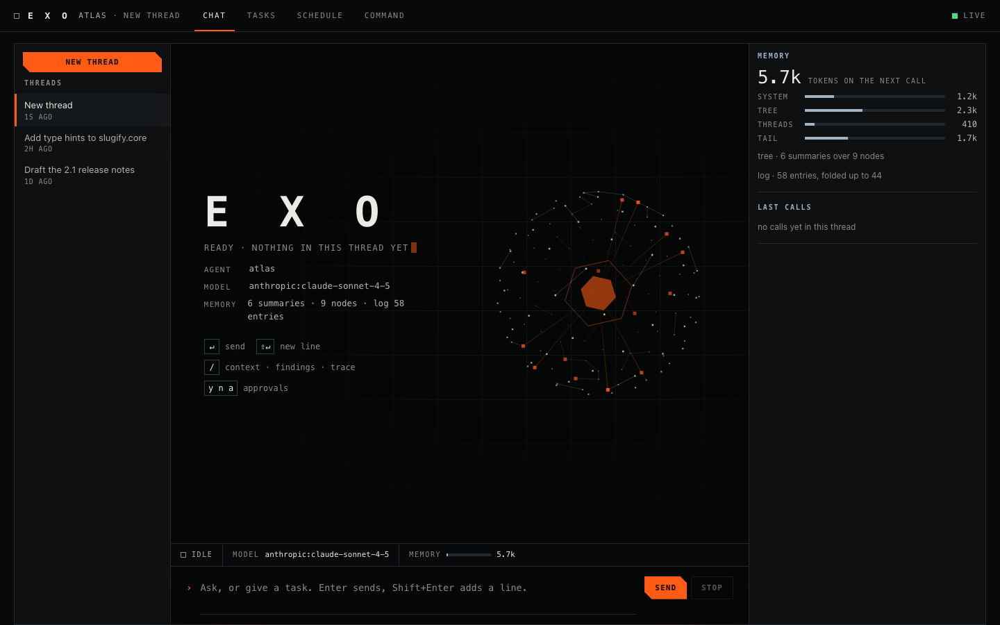
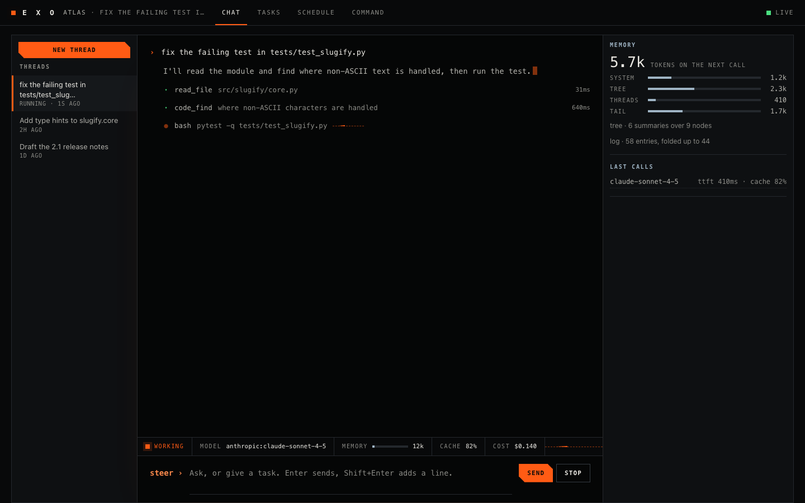
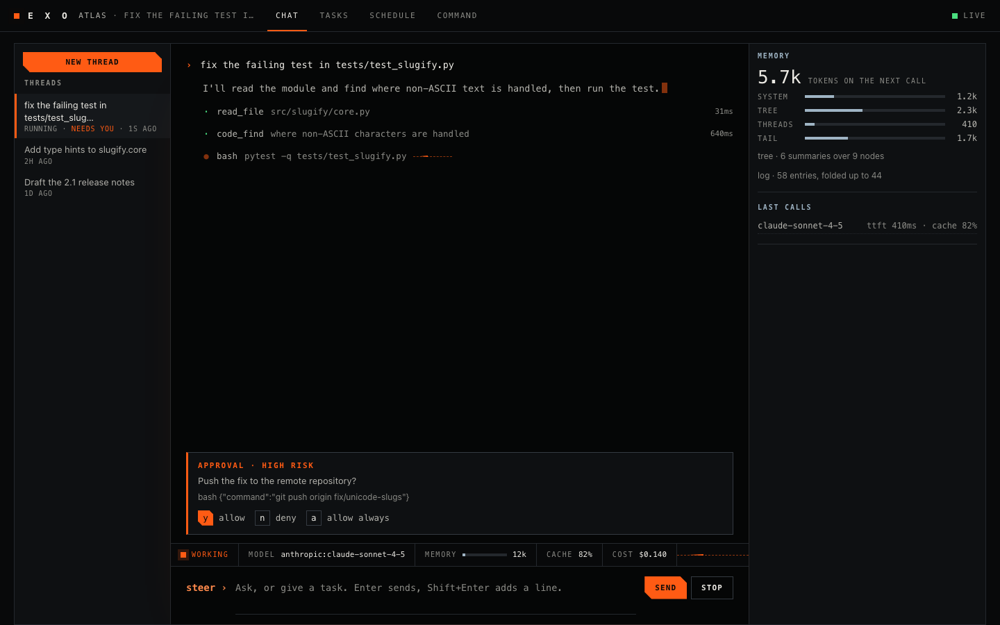

Memory column
Tokens the next call carries, split into system, summary tree, other threads and tail. Tree nodes, log length and the fold frontier. Filled from /context.
Project Exo · Web app
The current web client runs in your local browser and talks to the same core over the same protocol as the terminal. Open it next to the terminal and you see one agent, one thread, one memory. It adds a column that shows what the next call carries.
01 / Overview
The web app is plain JavaScript served by a small plugin. It has no build step, no framework and no file from outside. Panels draw from command answers and core events, so completed work stays in the core when you close the tab. Copy any unsent draft before closing.
Electron is the chosen future desktop package. It is not built yet, and comes last after core verification and browser workflow polish. See the delivery order.
Memory column
Tokens the next call carries, split into system, summary tree, other threads and tail. Tree nodes, log length and the fold frontier. Filled from /context.
Last calls
The route that served each call, time to first token, cache share and any fallback, with the cost of that call. A call that could not be priced reads unknown.
Approvals
An orange panel with y allow, n deny and a allow always, which work when the composer is not focused. Outward acts are bound to the exact text.
Quiet by design
Hairlines, mono capitals, orange for the one thing that needs you, cold blue for what the system knows. One dot pulses while a turn runs.
Reports in the thread
Type /context, /findings or /trace in the composer and the report appears in the transcript.
Motion on a budget
The start hero draws about 24 frames a second, stops when the tab is hidden and shows one still frame under reduced motion. Every animation respects prefers-reduced-motion.
02 / Screenshots
Same demo as the terminal page: an agent called atlas fixing a failing test. The text is scripted for the screenshot. The layout is the real client.

Start
The site hero sits behind a brand block with the agent, model, memory line and key hints. The instrument column on the right shows memory and the last calls.

A turn
One dim line per tool. Click a line to open its arguments and output. The status strip carries state, served model, memory gauge, cache share and session cost.

Gate
The panel names the risk and shows the exact text. Answer with the buttons or with y, n and a.

Memory
The memory column splits the next call into system, tree, other threads and tail, and shows the log position and fold frontier. It is hidden below 1100 px.
03 / How to open it
Start the core, then start the client. It binds to 127.0.0.1 only. For a core on another machine, use --url and --token-file.
The same installer as the terminal client. Python 3.11 or newer.
One process per agent. Terminal windows and the web app all join it.
Then visit the address below.
Prefer a terminal? The terminal client shows the same thread.